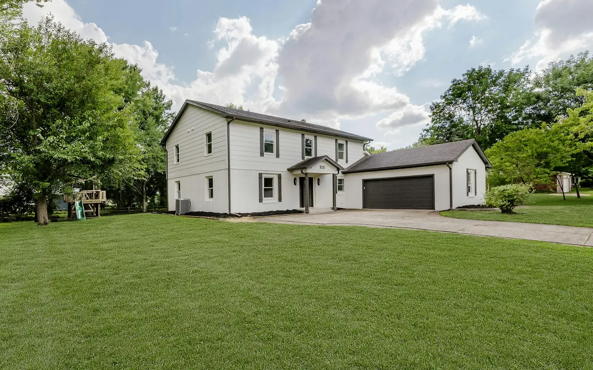

Garage Door Answers · Five Towns NY
Frequently Asked Questions
Garage door repair in Cedarhurst, Hewlett, Lawrence, Woodmere & Inwood NY — straight answers from the technicians who work in Five Towns homes every day about springs, cables, openers, new doors, cost, and safety.
- Same-Day Service
- Free Written Estimate
- Licensed & Insured
Most Asked
What Five Towns Homeowners Ask Most
Straight answers from the technicians who work in Five Towns homes every day. Call (516) 490-0931 if you don't see your question here.
Who repairs garage doors in the Five Towns?
Five Towns Garage Door provides same-day repair in Cedarhurst, Hewlett, Lawrence, Woodmere, and Inwood. Call (516) 490-0931 any time — a real technician answers, not a call center. We arrive within 2–4 hours for most Five Towns locations and call 30 minutes before arrival.
My spring broke — is it safe to use the door?
No — stop immediately. A door with a broken spring can fall suddenly without warning. Do not operate the opener. Call (516) 490-0931 for same-day spring repair throughout the Five Towns.
How much does spring repair cost in the Five Towns?
Extension spring repair starts from $145. Torsion spring replacement starts from $295. Free written estimate before any work — the price we quote is what you pay. Call (516) 490-0931.
Do you work evenings and weekends?
Yes — available evenings, weekends, and holidays throughout the Five Towns. Garage doors break on their own schedule, and we pick up the phone every time. Call (516) 490-0931, or the South Shore line at (516) 612-9317.
My opener motor runs but the door won't move — why?
Almost always a stripped main drive gear. The nylon gear inside the opener wears out before the motor does — it's designed to fail first, protecting the more expensive component. On LiftMaster openers, a humming motor with no door travel almost always means the white nylon drive gear (Part #41A2817) has stripped. We stock gear kits for LiftMaster, Genie, Chamberlain, and Craftsman on every truck. Repaired same day. Call (516) 490-0931.
Why does hardware corrode so fast in Lawrence and Inwood?
Lawrence and Inwood sit on the South Shore waterfront. Salt air from Reynolds Channel and Jamaica Bay accelerates corrosion on steel cables and springs. We recommend galvanized or marine-grade stainless steel hardware for these properties. Call (516) 612-9317.
How long do garage door springs last?
Standard torsion springs are rated for ~10,000 cycles — one cycle being one open and one close. In a household that uses the garage twice daily, that's roughly 7–10 years. Salt air in the Five Towns South Shore communities can shorten this. High-cycle springs (25,000–50,000 cycles) are available as an upgrade. Call (516) 490-0931.
Do I need a permit to replace a garage door in Nassau County?
A like-for-like replacement generally does not require a permit in Nassau County. If the opening size is being changed, the framing is being modified, or a new operator is being added to a manually-operated garage, requirements may apply depending on the specific Five Towns municipality. We advise you during the free estimate. Call (516) 490-0931.
Answers by Topic
Garage Door Questions, Sorted
Jump to the topic you need.
Repairs & Emergencies
Can you repair a garage door that came off its track?
Yes — off-track doors are one of the most common emergency calls we receive in the Five Towns. Do not force the door. Call (516) 490-0931. We realign the door, inspect for damage, and test the full system before leaving.
Why does my garage door make a grinding noise?
Grinding is almost always worn metal rollers running dry in the tracks. As the steel ball bearings wear out, the roller drags instead of rolls — creating friction and noise. Loose hardware vibrating against the door or a failing opener gear can also be the cause. A door that has become progressively noisier is telling you something: left unaddressed, worn rollers eventually seize completely and the door comes off track. We stock sealed nylon ball-bearing roller upgrade kits on every truck and repair all three causes same day. Call (516) 490-0931.
My door reverses before it closes — what's causing it?
Usually one of two things: misaligned photo-eye safety sensors at the bottom of the door opening, or an opener force setting that's calibrated too sensitively. If one sensor gets knocked out of alignment, the opener sees a blocked beam and reverses. Occasionally a physical obstruction in the track or a door that's out of balance can also trigger the reversal. We realign sensors and recalibrate force settings same day — and we diagnose and fix the actual cause, not just reset the opener. Call (516) 490-0931.
My door opens but won't fully close — what's happening?
Three common causes: misaligned photo-eye sensors that detect a false obstruction, an opener down-travel limit set too short, or an obstruction in the track preventing full travel. All three are diagnosed and corrected same day. The sensor misalignment is the most common — sensors at the bottom of the door opening get knocked by brooms, lawnmowers, and foot traffic more often than people realize. Call (516) 490-0931.
Should I repair or replace my garage door?
We'll give you an honest recommendation during the free inspection. As a rule: if the door structure is sound and only the hardware or springs have failed, repair is almost always the better value. If multiple panels are cracked, the door frame is bent, or the hardware has completely worn through after years of service, a replacement may save you money over the next few years in repeated repairs.
Springs & Cables
My garage door cable snapped — can I still use the door?
No. A door with a broken cable is structurally unbalanced and can fall suddenly on the unsupported side. Do not operate the opener or try to lift the door manually. Call (516) 490-0931 for same-day cable repair. We carry galvanized and stainless steel cables on every truck for properties near the water.
What are the warning signs that springs or cables are wearing out?
Older systems often give warning before they fail: grinding from dry rollers, a door that feels heavier than it used to, or a spring that shows visible rust and coil separation. We identify and address these warning signs during service calls — especially on Five Towns homes where cables, rollers, and tracks have been in service since the 1970s or 1980s.
Do extension springs need safety cables?
Yes. Lower-ceiling single-car garages sometimes use extension springs rather than torsion springs — and extension spring hardware requires safety cables to contain the spring if it ever breaks under load. In Inwood, where these garages are common, we install safety cables on every extension spring replacement as a standard practice, not an add-on.
Openers — LiftMaster & Genie
What is the best garage door opener for a Five Towns home?
For most attached garages in the Five Towns, the LiftMaster 87504 belt drive with integrated battery backup is our top recommendation (the 84505 is another option). Belt drive is significantly quieter than chain drive, which matters when the garage is directly below or adjacent to living spaces — Hewlett and Woodmere colonials, for example, typically have bedrooms directly above an attached garage. It includes battery backup for South Shore storm outages and built-in MyQ smart connectivity. For garages with low or finished ceilings — common in older Inwood and Cedarhurst homes — the LiftMaster 8500W wall-mount is the better choice. Call (516) 490-0931 for a specific recommendation based on your garage.
Do I need battery backup on my garage door opener?
For South Shore Five Towns properties — Lawrence, Inwood, Cedarhurst, and parts of Woodmere — we strongly recommend battery backup on every installation. Nor'easters, summer Atlantic storms, and the occasional hurricane-related outage are real and recurring events on the South Shore. A LiftMaster opener with integrated battery backup means the door functions normally during outages. You don't have to pull the emergency release to get the car out in the dark during a storm.
Can you install a garage door opener without using the ceiling?
Yes — LiftMaster wall-mount openers (the 8500 series) mount on the wall beside the door rather than on a rail above it, making them the ideal solution for garages with low, finished, or storage ceilings. They're also significantly quieter than overhead rail openers. The LiftMaster 98022 wall-mount jackshaft mounts flush to the wall beside the torsion spring bar, completely freeing ceiling space for overhead storage, car lifts, or finished cathedral rafters, and includes an automatic power deadbolt lock and battery backup. Call (516) 490-0931.
Can I control my garage door from my phone?
Yes — current LiftMaster openers with MyQ connectivity allow smartphone control from anywhere. You can open, close, and monitor the door remotely, receive notifications if it's been left open, and integrate with Amazon Alexa and Google Assistant. We can install a MyQ hub on compatible existing LiftMaster openers, or include it as a built-in feature on any new LiftMaster installation. For Genie openers, the Aladdin Connect universal retrofit module connects to most modern openers to enable smartphone status alerts, opening, closing, and scheduling. Call (516) 490-0931 for details.
Why is my Genie Safe-T-Beam sensor showing a blinking red light?
A blinking red light on a Genie Safe-T-Beam sensor indicates an optical beam obstruction, lens oxidation from coastal humidity, or physical misalignment. A solid red sending light and solid green receiving light indicate proper alignment.
Do you carry LiftMaster logic boards on your trucks?
Yes. South Shore electrical storms and coastal power grid surges frequently damage Security+ 2.0 receiver logic boards. We carry OEM circuit boards and reprogram all remotes on-site.
New Doors & Installation
How long does a garage door installation take?
Most standard single or double garage door installations in the Five Towns are completed in 3–5 hours on a single day. This includes removing the old door, inspecting the opening, installing the new door, calibrating the spring system, connecting the opener, and completing the safety inspection. We clean up and remove all old materials before leaving. Custom door orders may require a lead time of 2–4 weeks depending on the manufacturer.
What garage door style works best for Five Towns homes?
For most colonial and cape-style homes throughout Hewlett, Woodmere, and Cedarhurst, a carriage house style door in steel or composite overlay provides the best combination of curb appeal and durability. For contemporary renovations, flush panel or full-view aluminum and glass. For straightforward attached garage applications where energy efficiency matters most, a triple-layer insulated steel raised panel with R-12 or higher polyurethane foam is the best value. Homes near the water in Lawrence, Inwood, and Cedarhurst benefit from rust-resistant galvanized steel or aluminum construction. We discuss all options during the free in-home estimate.
Is it worth upgrading to an insulated door in an attached garage?
For most Five Towns attached garages — where the garage shares a wall with the kitchen, a bedroom, or a living space — yes, an insulated door is worth the upgrade cost. The shared wall creates a thermal bridge, and an uninsulated door makes it worse. A triple-layer door with R-12 polyurethane foam improves the temperature of the adjacent rooms, reduces heating and cooling costs through the shared wall, and is significantly quieter in operation. We discuss the specific trade-offs during the free in-home estimate. Call (516) 490-0931.
Can I keep my existing opener with a new door?
In most cases, yes — provided the existing opener is compatible with the weight and height of the new door. We assess the opener during the free estimate. If the opener is older than 15 years, under-powered for the new door, or lacks current safety features, we'll recommend replacing it — but we never push an unnecessary upgrade. You'll know our reasoning before we do anything.
Cost & Estimates
What do common garage door repairs cost in the Five Towns?
Starting prices across the Five Towns: torsion spring replacement from $295, extension spring replacement from $145, high-cycle spring upgrade from $380, lifting cable replacement (pair) from $125, coastal stainless steel cables from $155, sealed nylon roller upgrade from $35 per roller, track realignment and safety reset from $175, opener gear and sprocket rebuild from $130, safety sensor repair and alignment $75–$150, and the 22-point annual safety tune-up $99. The written on-site estimate is free, and the price quoted on-site is the final price on your invoice.
How much does a new garage door cost in the Five Towns?
New garage door prices in the Five Towns start from approximately $495 for a standard single-layer steel door and range to $2,500 or more for solid wood or full-view glass and aluminum doors. Installation is quoted separately in the free written estimate. The estimate you receive reflects the complete cost — door, hardware, installation, and disposal of the old door.
How often should I have my garage door serviced, and what does a tune-up include?
For most Five Towns homes, once a year is the right interval. Fall is the best time — before winter stress season. For South Shore properties in Lawrence, Inwood, and Cedarhurst near the water, semi-annual service is more appropriate due to salt air corrosion. An annual tune-up starting from $99 includes a 22-point inspection, full lubrication, safety tests, spring balance check, and a written condition report. Call (516) 490-0931.
Coastal Conditions
What cables and springs should a waterfront home use?
For homes within salt air range of Reynolds Channel, Jamaica Bay, and Lawrence Bay, galvanized steel cables are the minimum — not an upgrade. Direct waterfront properties should use marine-grade 316 stainless steel cables. Zinc-coated springs outlast standard springs significantly in a salt air environment. We make these recommendations without upselling — the alternative is replacing standard hardware two or three years sooner than necessary. Call the South Shore line at (516) 612-9317.
What garage door material holds up best near the water?
Homes near the water in Lawrence, Inwood, and Cedarhurst benefit from rust-resistant galvanized steel or aluminum construction. In Inwood's waterfront environment, aluminum doors resist corrosion without any additional treatment — a significant advantage over steel. Insulated steel with galvanized panels is the alternative for homeowners who prefer the traditional look.
Why is semi-annual service recommended for waterfront homes?
The salt air environment on the South Shore waterfront accelerates hardware wear faster than annual service can catch. A tune-up in spring and fall identifies corrosion, lubricates with corrosion-resistant products, checks spring and cable condition, and tests safety systems. It's significantly less expensive than an emergency call from a failure that semi-annual service would have caught.
Commercial Doors
How quickly do you respond to commercial calls in the Five Towns?
We prioritize commercial calls throughout Cedarhurst, Hewlett, Lawrence, Woodmere, and Inwood because we understand that a commercial door failure impacts business operations. We aim to respond within 2–4 hours on commercial emergency calls during business hours, and are available evenings and weekends for after-hours emergencies. Maintenance contract customers receive priority dispatch. Call (516) 490-0931.
What commercial door types do you service?
We service sectional commercial doors, rolling steel coiling doors, fire-rated doors, high-speed doors, and commercial overhead door operators throughout the Five Towns. We repair springs, cables, tracks, rollers, hardware, and operators on all commercial door systems. For fire-rated doors, we provide inspection documentation for Nassau County compliance records. Call (516) 490-0931.
Do you offer maintenance contracts for commercial properties?
Yes — we offer maintenance contracts for commercial properties in Cedarhurst, Hewlett, Lawrence, Woodmere, and Inwood. Contracts include scheduled inspections, lubrication, hardware adjustment, written reports, and priority emergency response. The cost of a maintenance contract is typically less than a single emergency repair call. Call (516) 490-0931 to discuss a program for your property.
Do commercial garage door springs need to be replaced more often than residential?
Commercial springs are rated for higher cycle counts than residential springs — typically 50,000 to 100,000 cycles versus 10,000 to 25,000 for standard residential springs. However, high-traffic commercial doors — auto shops, loading docks, storage facilities — may cycle the door 20 to 50 times per day, which adds up to 7,000 to 18,000 cycles per year. Regular inspection is the best way to catch springs approaching end of life before they fail during business hours. Call (516) 490-0931.
Local Answers
Questions About Your Town?
Each Five Towns community page answers the questions we hear most from homeowners there.
Google Reviews
What Customers Say
4.7 out of 5 stars from 15 Google reviews (as of September 2026). Reviews are quoted as written.
The garage door repair technician was friendly and helpful and he was there to fix my door not to just sell me a bunch of parts. He is the reason I would have this company back to my house. The scheduling was easy and the people were pleasant on the phone.
The technician did a great job to fix my garage door ! I appreciate his recommendation to replace the one coil and to replace the cable too. he was effcient and fast, and polite. I was hesitant at first because of the additional cost, but he spoke to me safert issues are first! Thank you for a job well done !
Having an issue with our external keypad/remote caused us to contact Five Towns Garage Doors. The company helped us contact the manufacturer for technical assistance instead of just charging us for a service call, saving us time and money. If we ever need garage door repair again, we will definitely use them.
Still Have a Question?
Same-day service · Free written estimate · Cedarhurst · Hewlett · Lawrence · Woodmere · Inwood
South Shore: (516) 612-9317 · North Shore: (516) 612-9316